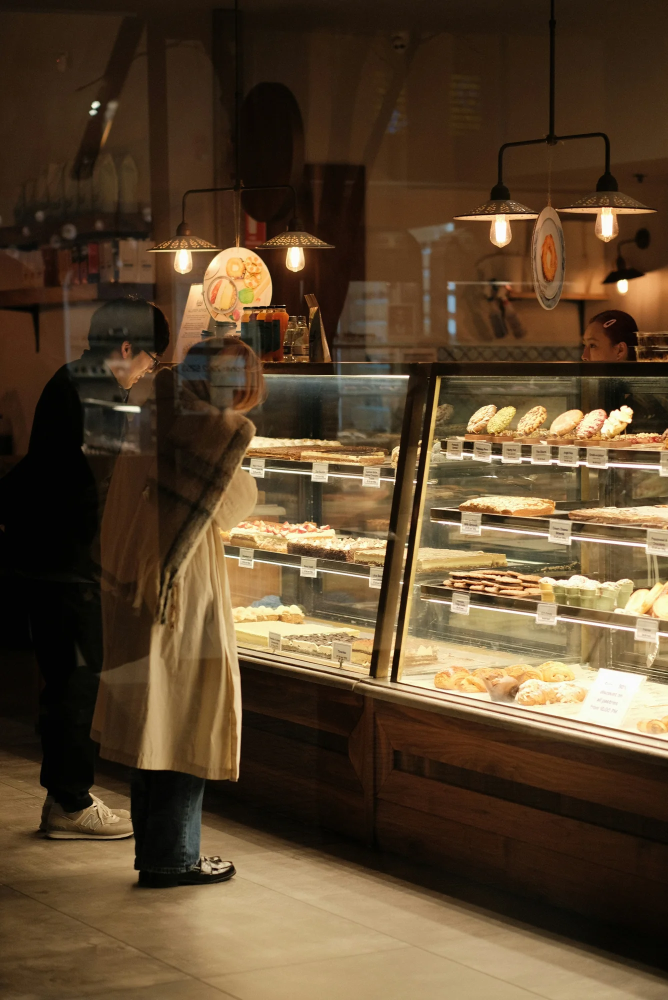

A STORY OF FLOUR, FIRE & TIME
Not just baked.
Considered.
We started with a simple thought: everyday bread deserves a little more attention.

FIG. 02 — OUR SPACETHE IDEA
Good food has
a point of view.
Maison Levain imagines a neighbourhood bakery where craft comes first and the welcome is always warm.
Our fictional kitchen in Bahawalpur brings together classic European baking methods and a relaxed local sensibility. We work with simple ingredients, let dough develop at its own pace and make only what we can make well.
This is a portfolio concept, not a real operating bakery. The story, menu and contact information are sample content designed to demonstrate a complete small-business website.
WHAT WE BELIEVE
Less rush.
More meaning.
01 Ingredient integrity over shortcuts.
02 Time is an ingredient, too.
03 Good things are better shared.
A FEW GOOD QUESTIONS
Good to know.
Do you bake fresh every day?
In this demo concept, yes: the menu is imagined as a small-batch daily bake. Actual availability would be confirmed by the business.
Can I place a large or custom order?
The sample site supports WhatsApp enquiries. For a real bakery, add lead times, minimum quantities and custom-order policies here.
Do you have vegan or gluten-free options?
Dietary information has not been verified for this fictional menu. Please confirm ingredients and cross-contact details with a real bakery before publishing claims.
COME SAY HELLO